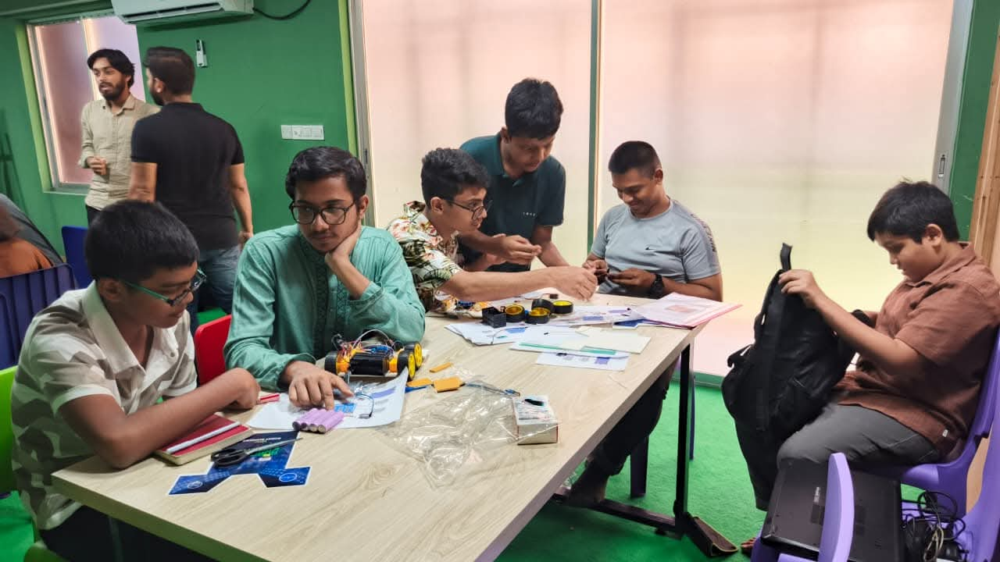
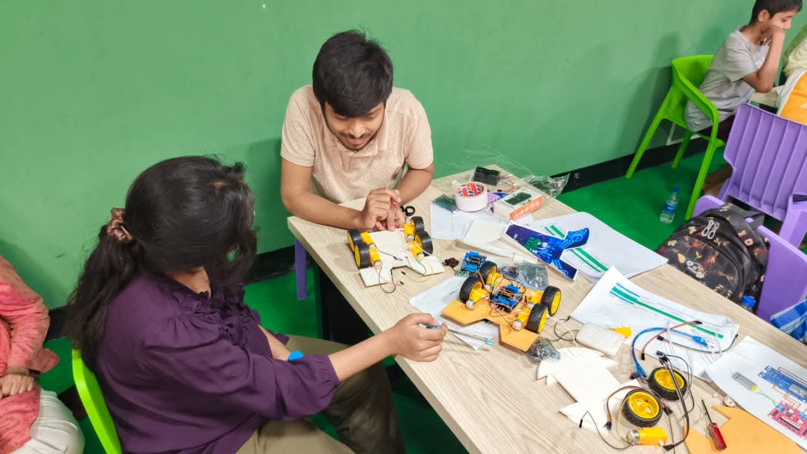
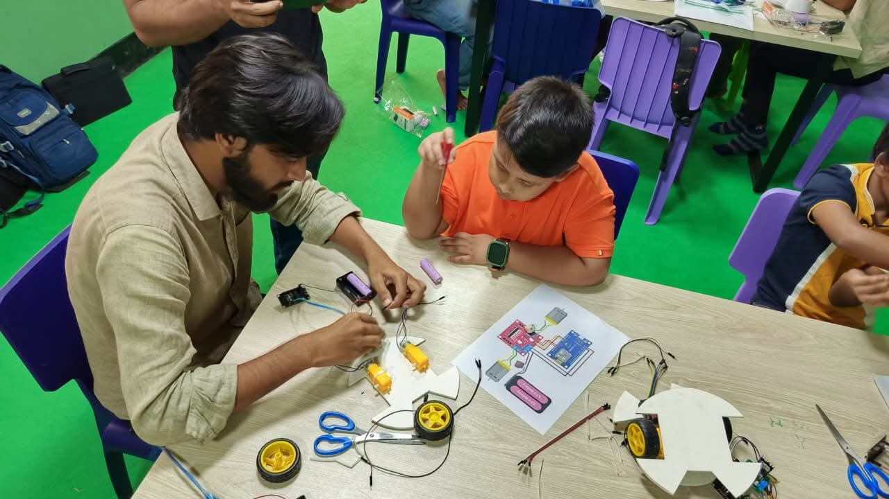
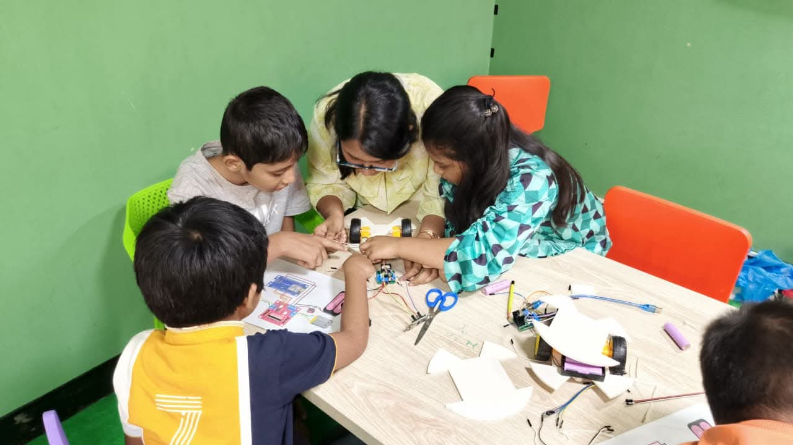
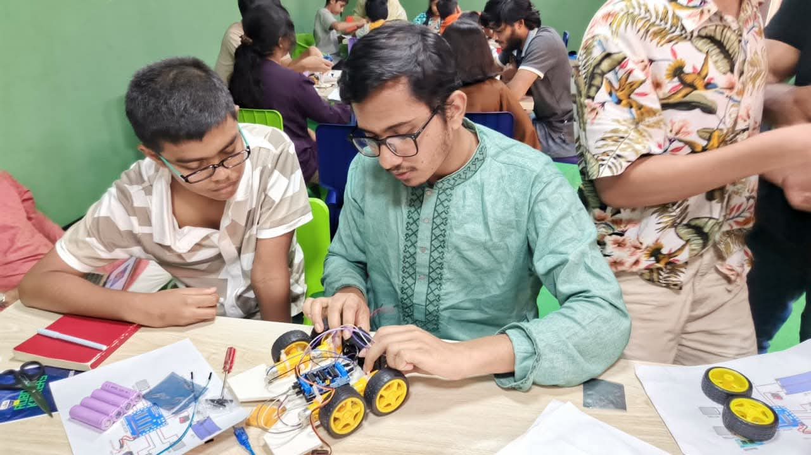
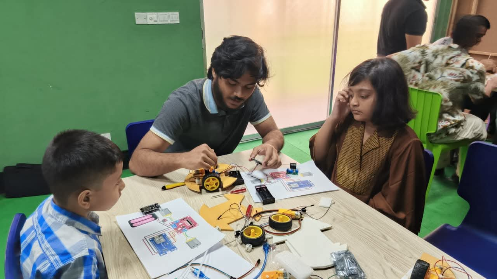

About the Workshop
Inspiring the next generation of innovators! The AIUB Robotic Crew takes robotics beyond the university campus and into schools and local communities. We believe that hands-on STEM education should be accessible to everyone, regardless of age.
Our School Community program introduces young students to the exciting world of robotics. From basic electronics and circuits to assembling their very first line-following robots, we guide students step-by-step. It is incredibly rewarding to see their creativity spark as they build and program their own machines!
Gallery





